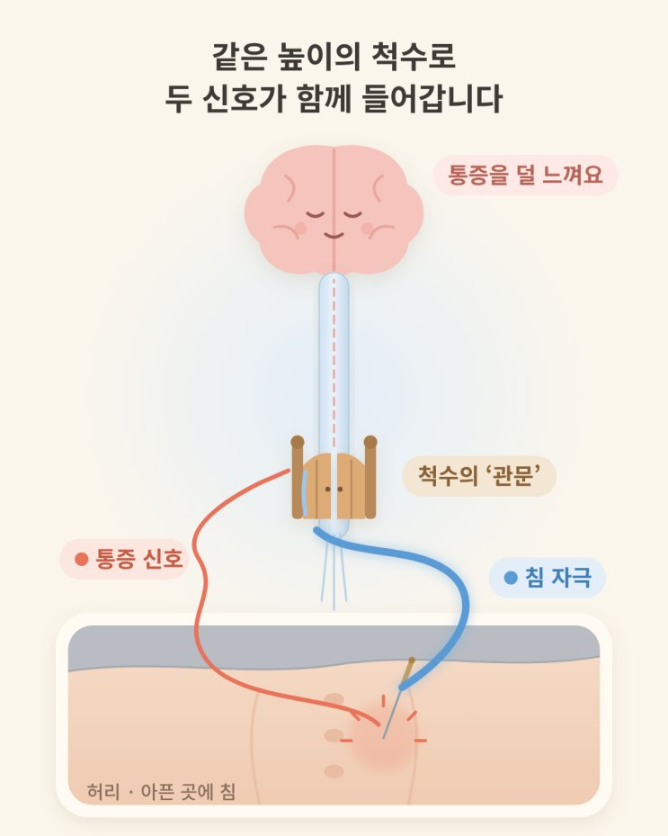
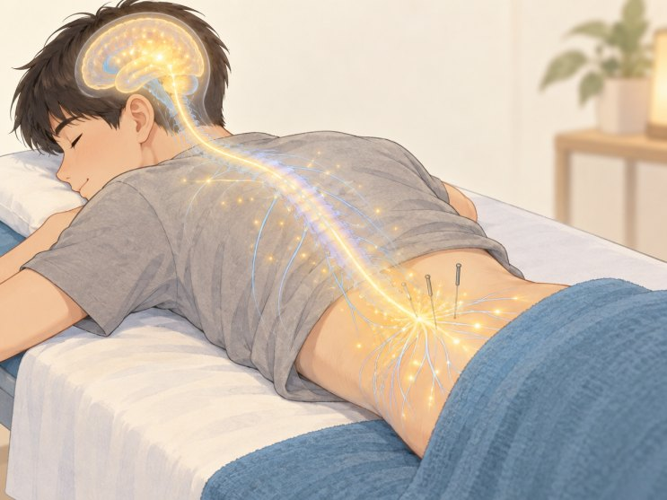
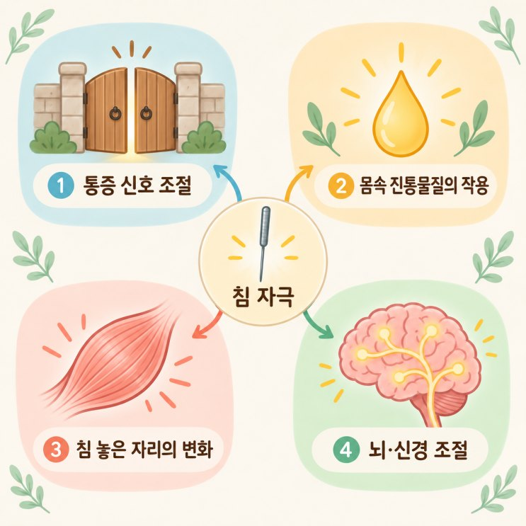

침 치료 원리, 과학적으로 쉽게 설명드립니다 (관문조절설, 엔도르핀, 전침)
이 글에서 알 수 있는 내용
- 경락과 경혈, 현대 과학은 어떻게 보고 있을까요
- 침이 통증을 줄이는 네 가지 원리
- 침은 몸이 스스로 진통제를 만들도록 깨우는 치료
오늘은 침이 어떻게 우리 몸을 낫게 하는지, 침치료의 원리에 대해 이야기해 보겠습니다.
얼마 전, 허리가 아파 침을 맞으러 오는 고교 남학생 환자가 이렇게 물었습니다.
"원장님, 침은 어떻게 해서 낫는 거예요?"
그래서 이렇게 설명해 주었습니다.
"우리 몸에는 경락이라는, 기(氣)가 흐르는 길이 있어.
그 길 위의 중요한 지점을 경혈, 흔히 혈자리라고 하지.
침으로 혈자리를 자극하면 기가 잘 돌게 되고,
몸이 스스로 낫도록 돕는 거야."
학생이 잠시 생각하더니 웃으며 말했습니다.
"왠지…무협지 같아요.^^"
듣고 보니 그럴 만합니다.
혈자리, 기의 흐름.
무협 소설에서 많이 본 말들이니까요.
그래서 현대인의 관점에서 이해되기 쉽도록 과학적인 설명을 곁들여 주었습니다.
오늘은 그 내용을 조금 더 자세히 풀어 보겠습니다.
경락은 '옛 사람들이 그린 몸의 지도'입니다
경락은 수천 년 동안 환자를 보며 쌓은 경험을 정리한 몸의 지도입니다.
"여기를 자극하니 저기가 편해지더라"는 관찰을 선으로 이어 놓은 것이죠.
하지만 현대 해부학에서 경락이라는 관이 따로 발견된 것은 아닙니다.
그렇다면 이런 질문이 생깁니다.
"침을 놓으면 몸 안에서 실제로 무슨 일이 일어날까요?"
이 질문에 답하기 위해 미국과 유럽을 비롯한 여러 나라에서 연구가 이루어지고 있습니다.
1997년에는 미국 국립보건원(NIH)이 침 치료에 대한 합의 회의를 열기도 했습니다.1
아직 침의 모든 원리가 밝혀진 것은 아닙니다만, 지금까지 어떤 연구가 이루어졌는지 하나씩 살펴보겠습니다.
① 통증이 지나가는 '문'을 조절합니다
관문조절설
어딘가에 부딪혔을 때 아픈 부위를 손으로 문지른 적 있으시죠?
문지르면 조금 덜 아프게 느껴질 때가 있습니다.
1965년 멜잭과 월이라는 두 학자가 이 현상을 설명했습니다.2
척수에는 통증 신호가 뇌로 올라가는 문(관문)이 있는데, 만지고 누르는 자극이 먼저 들어오면 이 문이 닫혀 통증 신호가 덜 올라간다는 것입니다.
이것을 관문조절설이라고 합니다.
침 자극으로 통증이 줄어드는 과정에도 이러한 신경계의 조절이 관여할 수 있습니다.

다만 침의 효과를 관문조절설 하나로 모두 설명할 수는 없습니다.
② 몸이 스스로 진통제를 만들도록 합니다
내인성 진통물질
우리 몸 안에는 천연 진통제가 있습니다.
엔도르핀, 엔케팔린 같은 물질입니다.
이런 물질을 내인성 진통물질이라고 합니다.
('내인성'은 몸 안에서 만들어진다는 뜻입니다.)
1970년대 동물 실험에서, 침으로 통증이 줄어든 상태에서 이 물질들의 작용을 막는 약(날록손)을 주면 침의 진통 효과가 사라졌습니다.3
침의 효과가 기분 탓이 아니라, 몸속 진통물질 덕분이라는 뜻입니다.
중국의 한지성 교수는 전침의 자극 주파수에 따라 나오는 물질이 다르다는 것도 밝혔습니다.4
낮은 주파수에서는 엔도르핀·엔케팔린이, 높은 주파수에서는 다이노르핀이 주로 나옵니다.
한마디로 요약해서 말씀드리면,
침은 진통제를 넣는 것이 아니라,
몸이 진통제를 만들도록 깨우는 치료입니다.

③ 침 맞은 자리에서도 변화가 일어납니다
2010년 학술지 『네이처 뉴로사이언스』에 흥미로운 쥐 실험 연구가 실렸습니다.
침을 놓고 돌리면 그 주변 조직에서 아데노신이라는 물질이 늘어나고, 이 물질이 통증을 누그러뜨린다는 것입니다.5
또 침을 놓으면 근육을 싸고 있는 막(근막)과 결합조직이 침에 살짝 감기며 세포에 자극이 전달된다는 가설을 제시한 연구도 있습니다.6
침을 맞을 때 뻐근하고 묵직한 느낌, 한의학에서 말하는 득기(得氣)도 이 현상과 관련이 있다고 봅니다.
④ 뇌와 몸 전체가 반응합니다
뇌 영상(fMRI) 연구에서는 침을 맞는 동안 통증과 감정을 처리하는 뇌 부위의 활동이 달라지는 모습이 관찰됐습니다.7
2021년에는 과학 학술지 『네이처』에 쥐의 다리 혈자리(족삼리)에 전침을 놓았더니 미주신경–부신 경로가 활성화되어 몸의 염증 반응이 조절되었다는 연구가 실렸습니다.8
침 한 자리의 자극이 신경을 타고 몸 전체의 균형에 영향을 준다는 것.
옛 사람들이 "기의 흐름을 돕는다"고 표현한 것을, 지금의 과학은 신경과 물질의 언어로 하나씩 설명해 가고 있는 셈입니다.
한눈에 정리하면

이렇게 침 자극에 대한 우리 몸의 반응은 한 가지로만 설명하기 어렵습니다.
통증 신호의 조절, 몸속 진통물질의 작용, 침 놓은 자리의 변화, 뇌와 신경계의 반응 등이 함께 연구되고 있습니다.
위의 번호는 설명을 위한 순서입니다. 이런 반응이 반드시 ①부터 ④까지 차례대로 일어난다는 뜻은 아닙니다.
다시 그 학생 이야기로 돌아와서,
요즘 그 학생은 침을 맞고 나면 허리가 한결 가볍다고 합니다.
이제는 "무협지 같다"는 말 대신
"제 몸이 진통제를 만드는 거죠?" 하고 묻습니다.^^
침은 몸에 없는 것을 억지로 넣는 치료가 아닙니다.
우리 몸이 원래 가진 회복하는 힘을 깨워 주는 치료입니다.
경락은 옛 사람들의 지도였고,
과학은 지금 그 지도를 하나씩 확인해 가는 중입니다.
ps. 질문하는 환자는 늘 반갑습니다. 덕분에 저도 다시 공부하게 되네요.
한의학박사 · 한방재활의학과 전문의 박장우
참고문헌
- NIH Consensus Conference. Acupuncture. JAMA. 1998;280(17):1518-1524. doi:10.1001/jama.280.17.1518
- Melzack R, Wall PD. Pain mechanisms: a new theory. Science. 1965;150(3699):971-979. doi:10.1126/science.150.3699.971
- Pomeranz B, Chiu D. Naloxone blockade of acupuncture analgesia: endorphin implicated. Life Sciences. 1976;19(11):1757-1762. doi:10.1016/0024-3205(76)90084-9
- Han JS. Acupuncture: neuropeptide release produced by electrical stimulation of different frequencies. Trends in Neurosciences. 2003;26(1):17-22. doi:10.1016/s0166-2236(02)00006-1
- Goldman N, Chen M, Fujita T, et al. Adenosine A1 receptors mediate local anti-nociceptive effects of acupuncture. Nature Neuroscience. 2010;13(7):883-888. doi:10.1038/nn.2562
- Langevin HM, Churchill DL, Cipolla MJ. Mechanical signaling through connective tissue: a mechanism for the therapeutic effect of acupuncture. FASEB Journal. 2001;15(12):2275-2282. doi:10.1096/fj.01-0015hyp
- Hui KK, Liu J, Makris N, et al. Acupuncture modulates the limbic system and subcortical gray structures of the human brain: evidence from fMRI studies in normal subjects. Human Brain Mapping. 2000;9(1):13-25. doi:10.1002/(SICI)1097-0193(2000)9:1<13::AID-HBM2>3.0.CO;2-F
- Liu S, Wang Z, Su Y, et al. A neuroanatomical basis for electroacupuncture to drive the vagal-adrenal axis. Nature. 2021;598(7882):641-645. doi:10.1038/s41586-021-04001-4